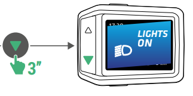
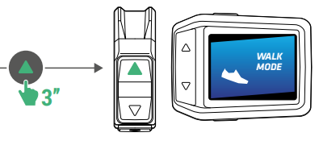

Svetla Lights

Drz 3 sekundy Press and hold 3 seconds
Stiskni a drz tlacitko «−» (sipka dolu na displeji) po dobu 3 sekund. Press and hold the «−» button (the down arrow on the screen) for 3 seconds.
Zkontroluj displej Check the screen
Na displeji se zobrazi "LIGHTS ON" nebo "LIGHTS OFF". The screen will show "LIGHTS ON" or "LIGHTS OFF".
Baterie Battery
Zapnuti kola Turn the bike ON
- Ujisti se, ze baterie je vlozena (zaklapne).
- Stiskni a drz tlacitko ON/OFF na displeji, dokud se nerozsviti.
- Na displeji se zobrazi rychlost, stav baterie a rezim asistence — jsi pripravena!
- Make sure the battery is inserted (it clicks in).
- Press and hold the ON/OFF button on the screen until it lights up.
- The screen will show your speed, battery level, and assistance mode — you're ready!
Vypnuti kola Turn the bike OFF
- Stiskni a drz tlacitko ON/OFF, dokud displej nezhasne.
- Press and hold the ON/OFF button until the screen goes dark.
Vlozeni baterie Insert the battery
- Zkontroluj, ze ve slotu neni nic jineho.
- Zasun baterii do drzaku, dokud nezaklapne.
- Pred jizdou vzdy vytahni klicek ze zamku.
- Check nothing is already in the battery slot.
- Slide the battery into its housing until it clicks.
- Always remove the key from the lock before you ride.
Vyjmuti baterie Remove the battery
- Otoc klickem — baterie se mirne vysune, abys ji mohla chytit.
- Pokud se sama nevysune, zatahni za vytahovaci ousko.
- Turn the key — the battery will move slightly so you can grip it.
- Pull the pull tab if it does not move on its own.
Asistence Assistance
Co je asistence? What is assistance?
Kolo ma motor, ktery ti pomaha pri slapani. Muzes si vybrat, jak moc ti ma pomahat:
The bike has a motor that helps you pedal. You can choose how much help you want:
- Rezim 0 — Bez pomoci motoru (jen vlastni sila)
- Rezim 1 — Mala pomoc (+70 %) — vhodne na rovinu (zacinat zde)
- Rezim 2 — Vetsi pomoc (+150 %) — vhodne na mirne kopce
- Rezim 3 — Velka pomoc (+220 %) — vhodne na strmejsi kopce
- Rezim 4 — Maximalni pomoc (+280 %) — kdyz jsi unavena nebo do velkeho kopce
- Mode 0 — No motor help (just your own legs)
- Mode 1 — A little help (+70%) — good for flat roads (starts here)
- Mode 2 — More help (+150%) — good for gentle hills
- Mode 3 — A lot of help (+220%) — good for steeper hills
- Mode 4 — Maximum help (+280%) — use when tired or on big hills
Tip: Motor pomaha jen kdyz slapete. Automaticky se vypne nad 25 km/h.
Tip: The motor only helps when you are pedalling. It stops automatically above 25 km/h.
Zvyseni asistence Increase assistance
- Stiskni tlacitko «+» na ovladaci na riditku (sipka nahoru).
- Kazde stisknuti zvysi rezim o jeden (1 → 2 → 3 → 4).
- Press the «+» button on the handlebar remote (the up arrow).
- Each press moves up one mode (1 → 2 → 3 → 4).
Snizeni asistence Decrease assistance
- Stiskni tlacitko «−» na ovladaci na riditku (sipka dolu).
- Kazde stisknuti snizi rezim o jeden (4 → 3 → 2 → 1 → 0).
- Press the «−» button on the handlebar remote (the down arrow).
- Each press moves down one mode (4 → 3 → 2 → 1 → 0).
Rezim chuze Walk Mode

Co je rezim chuze? What is Walk Mode?
Rezim chuze zpusobi, ze motor jemne tlaci kolo dopredu, zatimco jdes vedle nej — idealni pro tlaceni kola do kopce nebo po rampe bez namahani.
Walk Mode makes the motor gently push the bike forward while you walk beside it — perfect for pushing it up a ramp or steep path without tiring yourself.
Kolo musi byt zapnute Make sure the bike is ON
Displej musi svitit a zobrazovat informace. The screen should be lit up and showing information.
Drz tlacitko + Hold the + button
Stiskni a drz tlacitko «+» na ovladaci na riditku po dobu 3 sekund. Press and hold the «+» button on the handlebar remote for 3 seconds.
Zkontroluj displej Check the screen
Na displeji se zobrazi "WALK MODE". The screen will show "WALK MODE".
Jdi vedle kola Walk alongside the bike
Kolo se bude pomalu pohybovat dopredu (max 6 km/h) — jdi vedle nej. The bike will move forward slowly (max 6 km/h) — walk alongside it.
Nabijeni Charging
Priprava na nabijeni Prepare to charge
- Vyjmi baterii z kola (nebo ji nabijej primo na kole).
- Otevri krytek nabijeciho portu na baterii.
- Remove the battery from the bike (or charge it while still on the bike).
- Open the charging port cover on the battery.
Pripoj nabjecku Plug in the charger
Pripoj pouze nabjecku, ktera byla soucasti baleni kola. Plug in only the charger that came with the bike.
Cervene svetlo = nabiji se Red light = charging
Cervena LED znamena, ze se baterie nabiji. Plne nabiti trva priblizne 7 hodin. A red LED means it is charging. A full charge takes about 7 hours.
Zelene svetlo = nabito! Green light = done!
Zelena LED znamena, ze je baterie plne nabita — odpoj nabjecku. A green LED means it is fully charged — unplug it.
Tipy pro nabijeni Charging tips
- Nabijej pouze v interieru, na suchem miste.
- Nabijej pri teplote mezi 10°C a 40°C.
- Nikdy nenabijej v blizkosti vody nebo horlaveho materialu.
- Nabij baterii alespon jednou za 6 mesicu, i kdyz jsi nejezdila.
- Charge indoors only, in a dry place.
- Charge at temperatures between 10°C and 40°C.
- Never charge near water or flammable materials.
- Charge the battery at least once every 6 months even if you haven't ridden.
Tipy pro skladovani baterie Battery storage tips
- Skladuj baterii nabitu na 30 % az 60 %.
- Uchovavej ji na chladnem, suchem miste (10°C–25°C), mimo prime slunecni svetlo.
- Pri dlouhodobem skladovani kontroluj nabiti kazdych 3 mesicu.
- Store the battery between 30% and 60% charge.
- Keep it in a cool, dry place (10°C–25°C), away from direct sunlight.
- If storing for a long time, check the charge every 3 months.
Reseni problemu Troubleshooting
Mozne priciny:
Possible reasons:
- Jedes rychleji nez 25 km/h — motor se pri teto rychlosti automaticky vypne.
- Neslapete — motor funguje jen pri slapani.
- Baterie je velmi vybita — nabij ji.
- Rezim asistence je na 0 — stiskni «+» pro rezim 1, 2, 3 nebo 4.
- Displej je vypnuty — stiskni ON/OFF pro jeho zapnuti.
- You are going faster than 25 km/h — the motor stops automatically at that speed.
- You are not pedalling — the motor only works when you pedal.
- The battery is very low — charge the battery.
- Assistance mode is set to 0 — press «+» to choose mode 1, 2, 3 or 4.
- The screen is off — press ON/OFF to turn it back on.
- Chladne pocasi zkracuje zivotnost baterie — v zime je to normalni.
- Vysoke rezimy asistence (3 nebo 4) spotrebovavaji vice energie.
- Jizda do kopce spotrebovava vice energie.
- Na rovine prepni na rezim 1 nebo 2 pro usporu baterie.
- Zkontroluj, ze pneumatiky jsou nahustene na 2–5 baru.
- Cold weather reduces battery life — this is normal in winter.
- Using high assistance modes (3 or 4) uses more battery.
- Going uphill uses more battery.
- Switch to mode 1 or 2 on flat ground to save battery.
- Make sure tyres are inflated to 2–5 bar.
- Chyba 10 nebo 12: Baterie je vybita nebo prazdna — nabij ji.
- Chyba 44: Motor je prehrity — zastav a odpocin si, slapej jemne s nizkou asistenci.
- Jina chyba: Vypni a znovu zapni kolo. Pokud problem pretrva, kontaktuj dilnu Decathlonu.
- Error 10 or 12: Battery is low or empty — charge the battery.
- Error 44: Motor is too hot — stop and rest, pedal gently with low assistance.
- Any other error: Turn the bike off and on again. If it persists, contact a Decathlon workshop.
- Nove brzdove desticky se musi "zajet" — kazde brzdou jemne zabrzdete asi 10krat, zpomal z priblizne 25 km/h na 5 km/h.
- Za mokra jsou brzdne drahy vzdy delsi — zpomal drive.
- New brake pads need "bedding in" — apply each brake gently about 10 times, slowing from ~25 km/h to 5 km/h.
- In wet weather, braking distances are always longer — slow down earlier.
Navstiv: Podpora Decathlon nebo zajdi do nejblizsiho obchodu Decathlon.
Visit: Decathlon Support or go to your nearest Decathlon store.